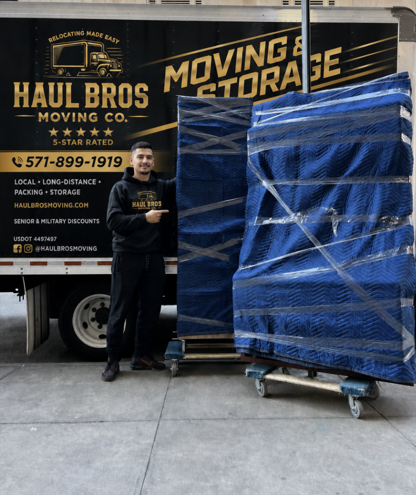

Woodbridge, VA Neighborhood Moving Guide: How to Plan a Smooth Local Move
Moving in Woodbridge isn't just about loading a truck — it's about knowing which of your neighborhood's quirks will actually slow you down. A townhouse near Potomac Mills has different access rules than a gated community in Montclair, and an apartment building in Lake Ridge has a completely different elevator situation than a single-family home off Occoquan. Knowing what to plan for ahead of time is what separates a smooth move from a stressful one.
Haul Bros Moving Co LLC (US DOT #4497497) provides local moving, apartment and townhouse moving, packing, commercial moving, storage moves, labor-only moving, long-distance moving, and junk removal throughout Woodbridge, Prince William County, Northern Virginia, Washington, D.C., and Maryland.
Request a free Woodbridge moving estimate or call 571-899-1919.
Quick Answer: What to Know Before Moving in Woodbridge
Before your move, confirm parking rules, driveway access, elevator reservations, stairs, walking distance, and moving hours at both properties. Woodbridge moves commonly involve:
- Townhouse staircases and tight turns
- Apartment elevator reservations
- Gated-community access and HOA parking rules
- Narrow residential streets and limited curbside parking
- Long walks from the truck to the front door
- Basement or garage furniture
- Traffic near Route 1, I-95, and Potomac Mills
Flag these details before your estimate so your crew size, truck, and timeline are accurate from the start.
Woodbridge and the Surrounding Area
Woodbridge is a large Prince William County community with a real mix of housing — apartments, townhomes, condos, single-family homes, and storage facilities across neighborhoods like Dale City, Lake Ridge, Occoquan, Dumfries, Triangle, Potomac Shores, Montclair, and Belmont Bay. We also regularly move customers to and from Lorton, Springfield, Manassas, Stafford, Fredericksburg, Fairfax, Alexandria, and Washington, D.C.
Because every property is different, your exact pickup and delivery addresses matter more than the neighborhood name when it comes to planning your move.
Common Woodbridge Moving Challenges
Townhouse stairs and multiple floors. Many Woodbridge townhouses run two or three levels with narrow staircases and tight corners. Tell us how many floors are involved, what's upstairs, whether there's a basement, and whether parking sits directly in front of the home — it changes how we plan the move.
Apartment and condo access. Freight elevators, loading docks, move-in fees, certificates of insurance, and building access codes are all things your leasing office controls — not your movers. Always confirm your reservation with the property manager before moving day; a crew that arrives on time can still be delayed by an unreserved elevator.
Gated communities and HOA rules. Some Woodbridge communities require a gate pass, restrict truck size, or limit moving hours. Send us this information ahead of time so we can plan the truck's approach and parking.
Long walking distances. Fire lanes, assigned parking, narrow driveways, and gated entrances can all push the truck farther from your door than expected. Let us know if parking won't be close — it directly affects your estimate.
Moving Services in Woodbridge
Local Moving — Loading, transportation, unloading, furniture placement, and basic disassembly/reassembly for homes, townhouses, apartments, and condos throughout Woodbridge.
House & Townhouse Moving — For single-family homes and townhouses, tell us your bedroom count, floors, basement/attic contents, and any large or heavy furniture so we bring the right crew. Townhouse moves with stairs and tight corners get extra planning up front.
Apartment & Condo Moving — We coordinate around elevator reservations, loading docks, parking restrictions, and building move-in windows so your move stays on schedule.
Packing & Unpacking — Full-home, partial, or fragile-only packing for kitchens, electronics, closets, and artwork, with room labeling and unpacking available on request. See our packing guides for prep tips.
Labor-Only Moving — Renting your own truck or storage container? We'll handle the loading, unloading, and heavy lifting.
Storage Solutions — Help moving belongings into, out of, or between storage facilities when your closing date or lease timeline doesn't line up perfectly.
Commercial Moving — Office and retail relocations for desks, filing cabinets, computers, and supplies, planned around loading-dock access and your preferred schedule.
Junk Removal — Clear out unwanted furniture, appliances, and clutter before or after your move — often bundled with your moving service.
Woodbridge Moving Rates
| Crew | First 2 Hours | Each Additional Hour | Best For |
|---|---|---|---|
| 2 movers + 26' truck | $395 | $159 | Studios, 1-bedrooms, small townhouses |
| 3 movers + 26' truck | $495 | $189 | 2-bedrooms, multiple floors, stairs/elevators |
| 4 movers + 26' truck | $695 | $249 | Larger homes, heavy inventory, tight timelines |
Final pricing depends on inventory, stairs, elevators, parking, walking distance, and any packing or specialty-item needs — always confirmed in a written estimate.
How to Prepare for a Woodbridge Move
2–4 weeks before: Book your movers, confirm your date, contact both property managers, reserve elevators or loading areas, measure large furniture and doorways, and start packing items you rarely use.
1 week before: Finish packing, label boxes by room, set aside medications and important documents, confirm parking access and arrival window, and disassemble approved furniture.
Moving day: Keep hallways clear, keep pets and kids in a safe area, keep keys and documents with you, point out fragile or valuable items, and do a final walkthrough before the crew leaves.
Why Choose Haul Bros
We focus on careful handling, organized loading, and clear communication — with a written estimate that doesn't change once the truck is loaded. Read our customer reviews or learn more about our team.
Frequently Asked Questions About Moving in Woodbridge
What is the best moving company in Woodbridge, VA?
It depends on your location, inventory, and access needs — compare written estimates, reviews, and equipment rather than just the lowest advertised rate. Haul Bros handles local, apartment, townhouse, commercial, and storage moves throughout Woodbridge.
How much do movers cost in Woodbridge?
Local rates start at $395 for the first two hours with two movers and a truck, then $159 per additional hour. Final cost depends on crew size, stairs, parking, and inventory.
Does Haul Bros serve all Woodbridge neighborhoods?
Yes, including Dale City, Lake Ridge, Dumfries, Occoquan, Triangle, and surrounding Prince William County communities.
Do you move townhouses with stairs?
Yes — stairs, multiple floors, shared parking, and basic furniture disassembly are all part of standard townhouse moves.
Do you provide apartment moving in Woodbridge?
Yes, including coordination for elevators, loading docks, parking restrictions, and building requirements.
Can movers load my rental truck?
Yes — our labor-only service covers loading and unloading rental trucks, trailers, and storage containers.
Do you move items into storage?
Yes, including moves into, out of, or between approved storage facilities.
Do you offer packing services?
Yes — full-home, partial, fragile-item, kitchen, electronics, and unpacking services are all available.
Do you disassemble and reassemble furniture?
Basic disassembly and reassembly is included for standard beds, tables, and desks. Antique, wall-mounted, or specialty items may need separate arrangements.
How far in advance should I book?
4–6 weeks is typical. Book earlier for summer, weekends, holidays, month-end dates, and apartment or commercial moves.
Can I request an estimate online?
Yes — submit your details through our contact page or call 571-899-1919.
Request a Woodbridge Moving Estimate
Send us your pickup and delivery addresses, moving date, home size, stairs and elevator details, parking information, and any packing or storage needs. Call 571-899-1919, email relocating@haulbrosmoving.com, or request your free estimate online.
Haul Bros Moving Co LLC — Relocating made easy.